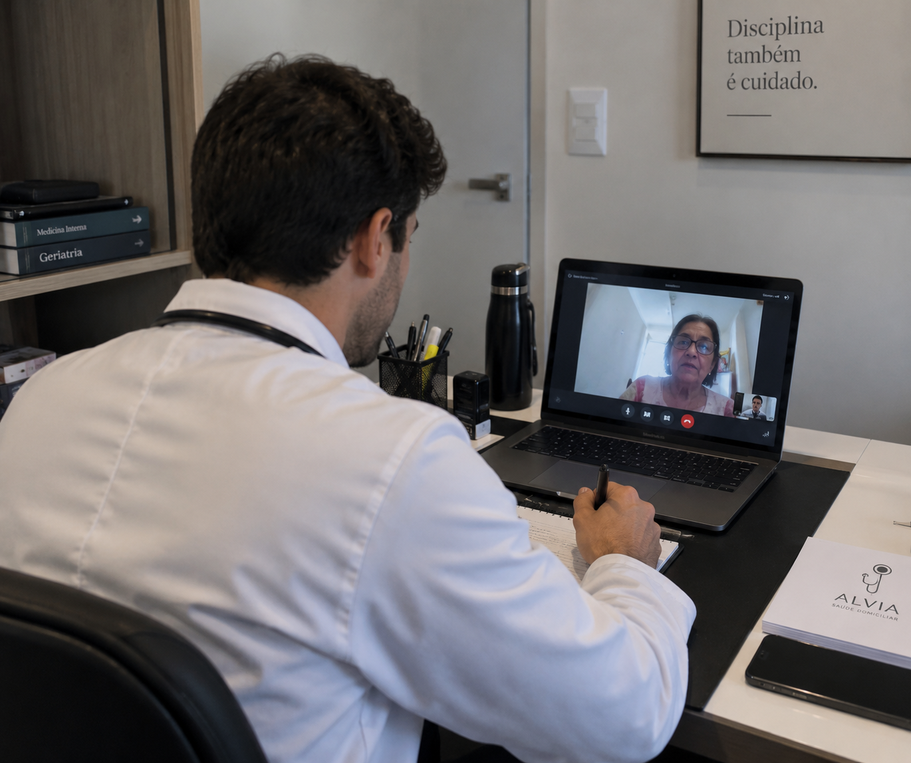

Atendimento Médico Humanizado no Conforto do Seu Lar
Cuidado especializado com a excelência do Hospital Albert Einstein — SP, dedicado ao bem-estar, segurança e qualidade de vida pensando em você.
Descubra como o acompanhamento médico exclusivo em casa traz tranquilidade e preserva a saúde de toda a família.
O paciente é atendido em seu próprio lar, evitando o estresse de trânsito, salas de espera lotadas e riscos de infecções hospitalares.
Consultas detalhadas, com foco na escuta ativa, anamnese completa e atenção minuciosa ao histórico clínico.
Avaliação das condições do domicílio para identificar riscos de quedas, adaptar o espaço e orientar os familiares.
Rigor técnico e científico respaldado pela Pós-Graduação em Geriatria pelo Hospital Israelita Albert Einstein (SP).

O médico Dr. Luiz é Formado pelo Centro Universitário de Maringá - UniCesumar. Idealizou a Alvia Saúde Medical Care que nasce com o propósito de levar o atendimento médico ao seu domicílio e através da telemedicina para todo o Brasil, unindo excelência técnica e profundo respeito humanitário. O Dr. Luiz Felipe (CRM-PR 64.965) conduz cada atendimento com dedicação integral ao paciente.
Especializando-se em Geriatria pelo renomado Hospital Israelita Albert Einstein (São Paulo), o Dr. Luiz Felipe realiza o manejo de saúde integrativa e humanizada.
Serviços planejados para garantir o máximo de suporte médico e conforto onde você estiver em Londrina.
Avaliação clínica especializada em casa para pacientes de Londrina. Atendimento via Telemedicina para todo o Brasil, com renovações de receitas, acompanhamento de exames e orientações realizadas de forma segura e prática por videochamada.
Monitoramento regular do estado de saúde, ajuste de medicações e prevenção de hospitalizações desnecessárias.
Orientações claras e suporte contínuo para familiares e cuidadores lidarem com a rotina de cuidados do paciente.
Revisão minuciosa dos medicamentos em uso para evitar interações medicamentosas e estratégias de segurança no lar.
Veja como a avaliação médica integrativa pode ajudar nas condições mais comuns do dia a dia.
O emagrecimento saudável vai muito além de dietas restritivas. Realizamos uma avaliação clínica, metabólica e hormonal completa para identificar as reais dificuldades na perda de peso. O tratamento médico foca na mudança da composição corporal, melhora da resistência à insulina e ganho de massa magra, visando sempre a longevidade e respeitando a individualidade de cada paciente.
Sim! A queda de cabelo excessiva é um sintoma que frequentemente indica desequilíbrios nutricionais, metabólicos, hormonais ou emocionais (estresse). Durante a consulta, investigamos a raiz do problema através de anamnese e exames laboratoriais detalhados. A partir disso, propomos o melhor tratamento, que pode envolver reposição de vitaminas, ajuste hormonal ou medicamentos específicos.
Dores de cabeça crônicas impactam severamente a qualidade de vida. Através de uma entrevista clínica minuciosa, diferenciamos enxaquecas, cefaleias tensionais e outras causas secundárias. O objetivo do acompanhamento é criar um plano de prevenção e controle das crises, reduzindo a dependência de analgésicos e investigando fatores gatilhos, como qualidade do sono, estresse e alimentação.
Com certeza. A infecção urinária de repetição é uma das queixas que mais limitam a rotina. Na avaliação domiciliar, analisamos fatores de riscos, tempo de sintomas.
Entre em contato diretamente para tirar dúvidas ou agendar o atendimento do Dr. Luiz Felipe Scandelai Coronado em Londrina e região.
Preencha os campos abaixo e entraremos em contato rapidamente.